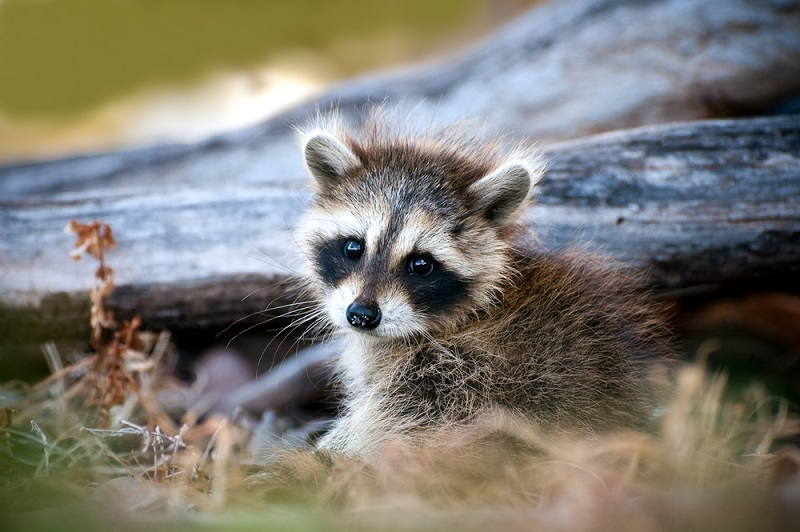
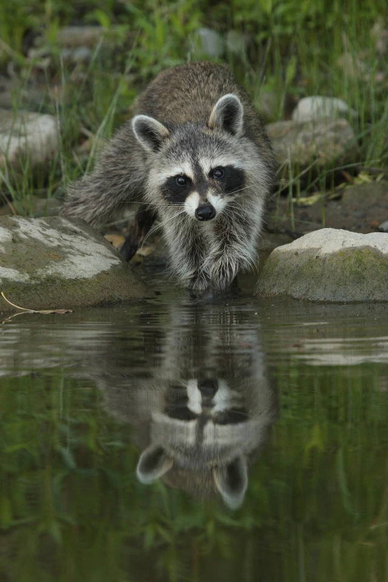
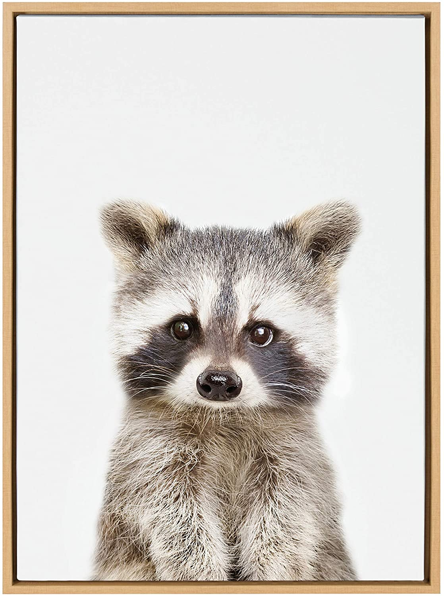

The raccoon
Pronounced (/rəˈkuːn/ or US: /ræˈkuːn/ Procyon lotor), sometimes called the common raccoon to distinguish it from other species, is a medium-sized mammal native to North America. It is the largest of the procyonid family, having a body length of 40 to 70 cm (16 to 28 in), and a body weight of 5 to 26 kg (11 to 57 lb). Its grayish coat mostly consists of dense underfur, which insulates it against cold weather. Three of the raccoon's most distinctive features are its extremely dexterous front paws, its facial mask, and its ringed tail, which are themes in the mythologies of the indigenous peoples of the Americas relating to the animal. The raccoon is noted for its intelligence, as studies show that it is able to remember the solution to tasks for at least three years. It is usually nocturnal and omnivorous, eating about 40% invertebrates, 33% plants, and 27% vertebrates.
Etymology
Names for the species include the common raccoon, North American raccoon, and northern raccoon, The word "raccoon" was adopted into English from the native Powhatan term meaning “animal that scratches with its hands”, as used in the Colony of Virginia. Its Latin name means “before-dog washer". It was recorded on John Smith's list of Powhatan words as aroughcun, and on that of William Strachey as arathkone. It has also been identified as a reflex of a Proto-Algonquian root ahrah-koon-em, meaning "[the] one who rubs, scrubs and scratches with its hands". The word is sometimes spelled as racoon.
Spanish colonists adopted the Spanish word mapache from the Nahuatl mapachtli of the Aztecs, meaning "[the] one who takes everything in its hands". In many languages, the raccoon is named for its characteristic dousing behavior in conjunction with that language's term for bear, for example Waschbär ('wash-bear') in German, Vaskebjørn ('wash-bear') in Norwegian, Huan Xiong (浣熊 'wash-bear') in Chinese, dvivón róchetz (דביבון רוחץ 'washing-bear[dim]') in Hebrew, orsetto lavatore ('little washer bear') in Italian, and araiguma (洗熊 (あらいぐま) 'washing-bear') in Japanese. Alternatively, only the washing behavior might be referred to, as in Russian poloskun (полоскун, 'rinser').
Physical characteristics
The most characteristic physical feature of the raccoon is the area of black fur around the eyes, which contrasts sharply with the surrounding white face coloring. This is reminiscent of a "bandit's mask" and has thus enhanced the animal's reputation for mischief. The slightly rounded ears are also bordered by white fur. Raccoons are assumed to recognize the facial expression and posture of other members of their species more quickly because of the conspicuous facial coloration and the alternating light and dark rings on the tail. The dark mask may also reduce glare and thus enhance night vision. On other parts of the body, the long and stiff guard hairs, which shed moisture, are usually colored in shades of gray and, to a lesser extent, brown. Raccoons with a very dark coat are more common in the German population because individuals with such coloring were among those initially released to the wild. The dense underfur, which accounts for almost 90% of the coat, insulates against cold weather and is composed of 2 to 3 cm (0.8 to 1.2 in) long hairs.
Intelligence
Zoologist Clinton Hart Merriam described raccoons as "clever beasts", and that "in certain directions their cunning surpasses that of the fox". The animal's intelligence gave rise to the epithet "sly coon". Only a few studies have been undertaken to determine the mental abilities of raccoons, most of them based on the animal's sense of touch. In a study by the ethologist H. B. Davis in 1908, raccoons were able to open 11 of 13 complex locks in fewer than 10 tries and had no problems repeating the action when the locks were rearranged or turned upside down. Davis concluded that they understood the abstract principles of the locking mechanisms and their learning speed was equivalent to that of rhesus macaques.
Studies in 1963, 1973, 1975 and 1992 concentrated on raccoon memory showed that they can remember the solutions to tasks for at least three years. In a study by B. Pohl in 1992, raccoons were able to instantly differentiate between identical and different symbols three years after the short initial learning phase. Stanislas Dehaene reports in his book The Number Sense that raccoons can distinguish boxes containing two or four grapes from those containing three. In research by Suzana Herculano-Houzel and other neuroscientists, raccoons have been found to be comparable to primates in density of neurons in the cerebral cortex, which they have proposed to be a neuroanatomical indicator of intelligence.